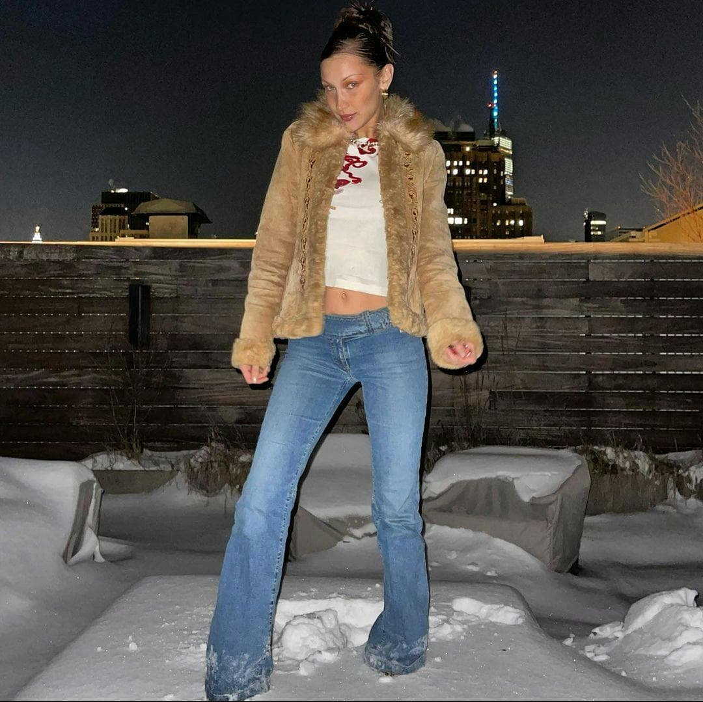

Corsets

Low-rise Jeans
The early 2000s aesthetic made a full-force comeback in 2021. Gen Z popularized baby tees, baguette bags, and low-rise jeans. Meanwhile, cottagecore—a romantic, nature-inspired style—took over social media, celebrating vintage floral patterns and flowy dresses.
- The revival of Y2K fashion x1 billion.
- Everything from crop tops and baguette bags to low-rise denim and rhinestones made an appearance.
- Comfort-driven fashion dominated.
- Loungewear became the norm, with sweat sets and oversized fits reigning supreme.
- Bold colors & accessories made a statement.
- Bright color blocking and chunky shoes defined 2021 and brought a sense of playfulness.
Bold Colors & Accessories
Sweat Sets